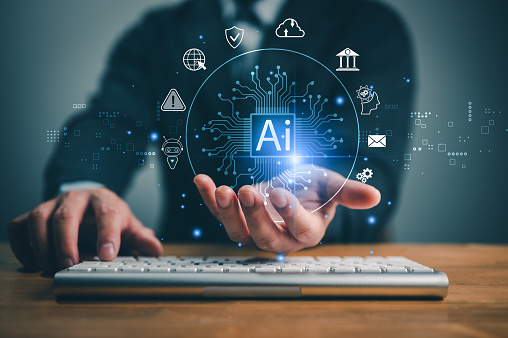
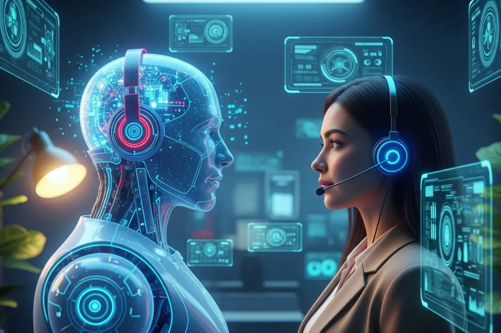

| |
|
|||
|
| | ||
| ¿ QUE ES LA INTELIGENCIA ARTIFICIAL? | |||
|
La inteligencia artificial (IA) es una tecnología que permite a las máquinas y computadoras simular capacidades humanas como el aprendizaje, la comprensión, la resolución de problemas, la toma de decisiones y la creatividad. Estas capacidades se logran mediante algoritmos avanzados y modelos matemáticos que procesan grandes volúmenes de datos. La IA puede realizar tareas como identificar objetos, comprender y responder al lenguaje humano, aprender de experiencias previas, hacer recomendaciones y actuar de manera autónoma. Por ejemplo, los vehículos autónomos son un caso emblemático de IA aplicada.La IA puede realizar tareas como identificar objetos, comprender y responder al lenguaje humano, aprender de experiencias previas, hacer recomendaciones y actuar de manera autónoma. Por ejemplo, los vehículos autónomos son un caso emblemático de IA aplicada El artículo de Stanford define la inteligencia como la parte computacional de la capacidad de lograr objetivos. Varios tipos y grados de inteligencia ocurren en las personas y en muchos animales. En las máquinas, los ingenieros de IA trabajan para comprender los mecanismos de la inteligencia humana, como qué tipos de procesos e información se necesitan para realizar una tarea y qué tipos de problemas presenta el mundo a la inteligencia, dice el artículo. Entonces, los ingenieros trabajan para hacer que las computadoras ejecuten algunos de estos mecanismos. “Si la máquina está programada para realizar una tarea que requiere mecanismos de inteligencia bien conocidos, puede ofrecer un rendimiento impresionante”, informa el artículo académico. A pesar de los continuos avances en la velocidad de procesamiento de las computadoras y la capacidad de la memoria, reconoce la Enciclopedia Britannica, todavía no hay programas que puedan igualar la flexibilidad humana en dominios más amplios o en tareas que requieren mucho conocimiento cotidiano. Por otro lado, algunos programas han alcanzado los niveles de desempeño de expertos humanos y profesionales en la realización de determinadas tareas, por lo que la inteligencia artificial se encuentra en aplicaciones tan diversas como diagnósticos |  |
||
| APLICAIONES DE LA IA | |||
|
ASISTENTE IA  Un asistente de IA es una herramienta diseñada para ayudar a las personas a obtener información de manera rápida. Puede analizar preguntas, comprender su intención y ofrecer respuestas claras y útiles. Además, aprende de las interacciones para mejorar su capacidad de diálogo. Su objetivo principal es facilitar tareas y ampliar el acceso al conocimiento. Funciona mediante modelos avanzados que procesan lenguaje natural. Y está disponible en cualquier momento para apoyar al usuario cuando lo necesite |
SALUD La inteligencia artificial está transformando la salud con sistemas que analizan datos médicos en segundos. Ayuda a identificar patrones que pueden mejorar diagnósticos y tratamientos. También facilita el seguimiento de pacientes mediante herramientas digitales más precisas. Su uso permite optimizar recursos y reducir tiempos de espera en los servicios de salud. Aunque no reemplaza a los profesionales, sí se convierte en un apoyo valioso para mejorar la atención. |
||
INTELIGENCIA ARTIFICIALvictor Augusto Magan España portada_1 |
|||